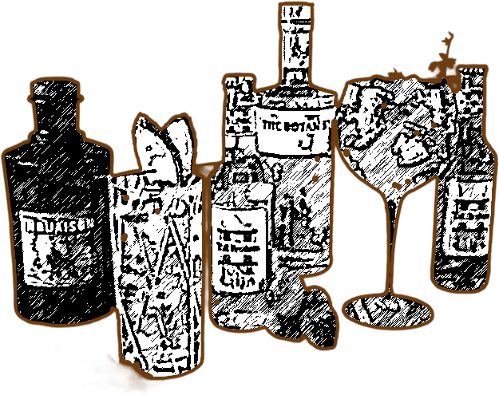

“Fortunately, there is gin, the sole glimmer in this darkness. Do you feel the golden, copper-coloured light it kindles in you? I like walking through the city of an evening in the warmth of gin.” - Albert Camus


At its most elemental, gin is a distilled spirit defined by a single non-negotiable ingredient: the juniper berry. By legal definition, gin must derive its main characteristic flavour from juniper berries and be bottled at no less than 40% alcohol by volume. Everything else — the grain, the additional botanicals, the distillation method — is where the art begins